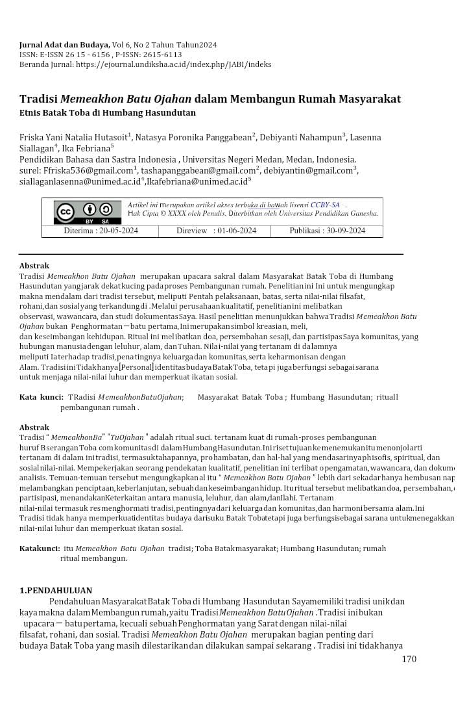
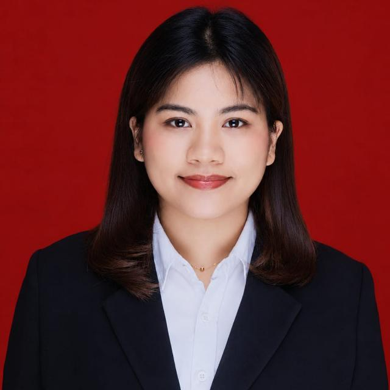
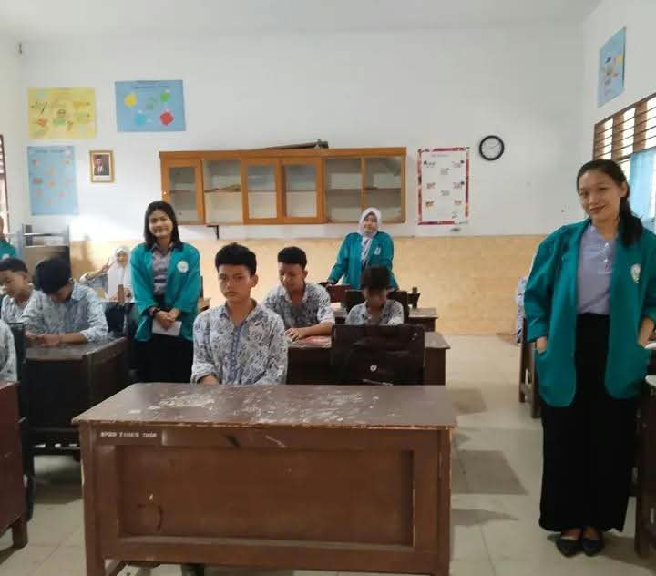
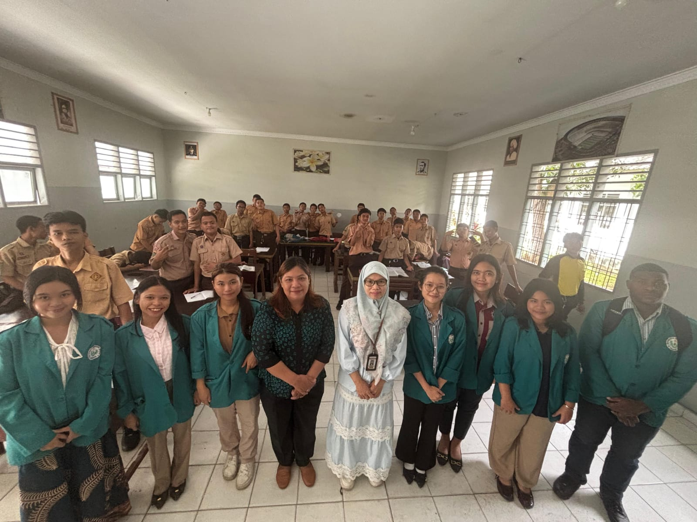
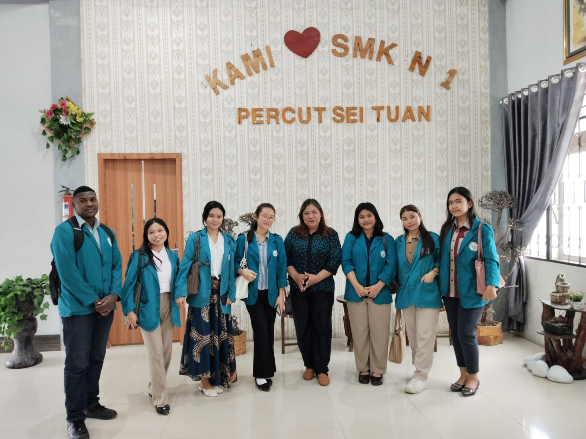
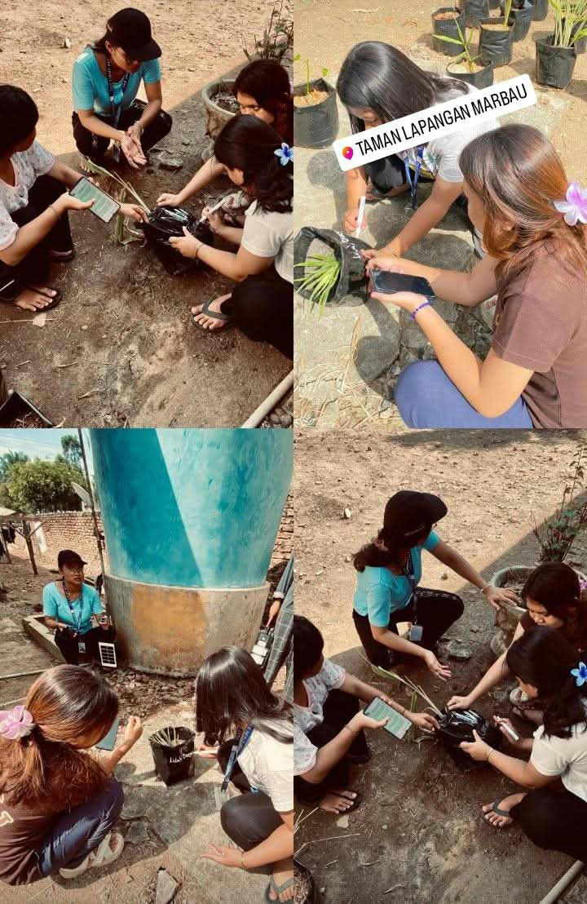
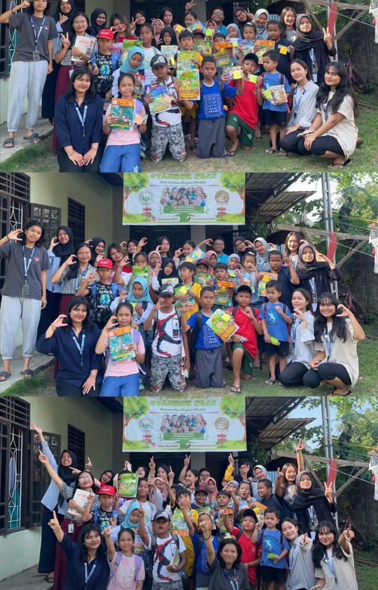
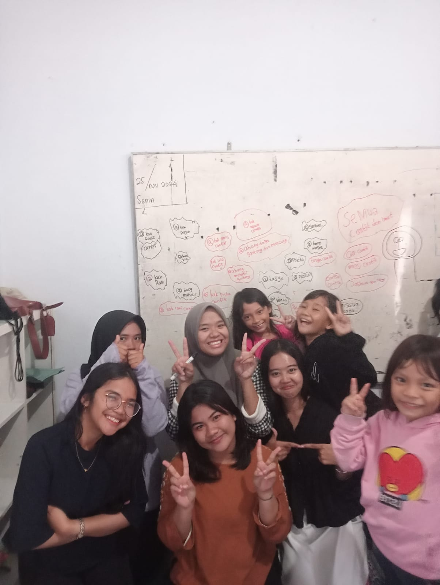
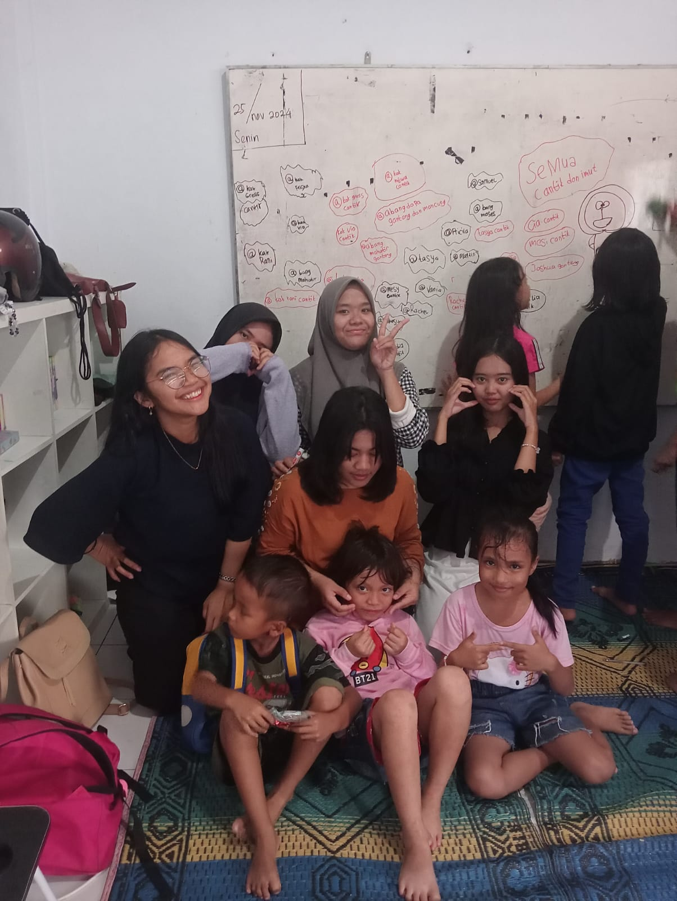

ARTIKEL · 2024
Kajian Tradisi Memeakhon Batu Ojahan
Dokumentasi artikel penelitian tradisi budaya masyarakat di Humbang Hasundutan.
Lulusan Pendidikan Bahasa dan Sastra Indonesia UNIMED dengan minat pada pembelajaran Bahasa Indonesia, literasi, penelitian pendidikan, dan pengabdian masyarakat.

Profil akademik dan pengalaman yang membentuk kemampuan mengajar, berkomunikasi, meneliti, dan bekerja sama.
Saya merupakan lulusan Pendidikan Bahasa dan Sastra Indonesia Universitas Negeri Medan tahun 2026. Saya memiliki ketertarikan pada dunia pendidikan, penguatan literasi, pengembangan media pembelajaran, serta kegiatan penelitian dan pengabdian kepada masyarakat. Pengalaman KKN, volunteer, PLP, dan penelitian membantu saya mengembangkan komunikasi, kolaborasi, tanggung jawab, dan kemampuan mendampingi proses belajar.
Universitas Negeri Medan (UNIMED) · 2026
Program studi ini memadukan penguasaan bahasa Indonesia, apresiasi sastra, dan ilmu pendidikan. Kompetensi yang dikembangkan mencakup keterampilan menyimak, berbicara, membaca, dan menulis; pemahaman tata bahasa dan teks; apresiasi karya sastra; perencanaan pembelajaran; pemilihan model serta media ajar; evaluasi pembelajaran; dan penelitian pendidikan.
Keterlibatan dalam lingkungan sekolah, masyarakat, dan kegiatan akademik.
Mengikuti Pengenalan Lapangan Persekolahan untuk mengenal budaya sekolah, kegiatan pembelajaran, interaksi dengan peserta didik, serta kolaborasi dengan guru dan warga sekolah.
Menjalankan peran Humas dengan mewawancarai warga untuk menggali potensi dan permasalahan desa. Terlibat dalam program penanaman TOGA, gotong royong, dan pendampingan belajar anak-anak setiap sore.
Berpartisipasi dalam pengabdian masyarakat Angkatan ke-10. Memperoleh sertifikat penghargaan atas kontribusi dalam kegiatan tersebut.
Terlibat dalam kajian tradisi Memeakhon Batu Ojahan dalam pembangunan rumah masyarakat Batak Toba. Artikel disebut terbit pada Jurnal Adat dan Budaya Vol. 6 No. 2 Tahun 2024 berdasarkan informasi pemilik portofolio.
Pengalaman merancang penelitian, mengolah informasi, dan menyampaikan temuan secara sistematis.
Penelitian kuantitatif dengan metode quasi-eksperimental dan desain Two Group Post-test Design. Penelitian melibatkan kelas eksperimen dan kelas kontrol, masing-masing 30 siswa. Hasil menunjukkan rata-rata post-test kelas CTL sebesar 77,50, sedangkan kelas ekspositori 69,50. Uji hipotesis menunjukkan hasil signifikan (sig. 0,001), sehingga penelitian mendukung adanya pengaruh penggunaan model CTL terhadap kemampuan menulis teks eksplanasi pada kelompok yang diteliti.
Kompetensi yang digunakan: perancangan penelitian, penyusunan instrumen tes, penilaian struktur dan kaidah kebahasaan teks, pengolahan data, interpretasi hasil statistik, dan penulisan ilmiah.

Dokumentasi artikel penelitian tradisi budaya masyarakat di Humbang Hasundutan.

Dokumentasi kegiatan penelitian/pengembangan media ajar di lingkungan sekolah. Keterangan lolos pendanaan Student Grant LPPM UNIMED berdasarkan informasi pemilik portofolio.
Surat Pencatatan Ciptaan untuk laporan penelitian “Pengembangan Media Ajar pada Materi Teks Tanggapan Berbantuan Aplikasi CapCut di SMP Negeri 9 Tebing Tinggi”, Nomor 000823816. Friska Yani Natalia Hutasoit tercantum sebagai salah satu pencipta.
Lihat Sertifikat Hak Cipta ↗Setiap dokumentasi dilengkapi keterangan kegiatan agar konteks pengalaman lebih mudah dipahami.








Kompetensi akademik, pedagogik, komunikasi, dan digital yang relevan untuk lingkungan pendidikan.
Terbuka untuk kesempatan mengajar, kolaborasi pendidikan, dan pengembangan profesional.